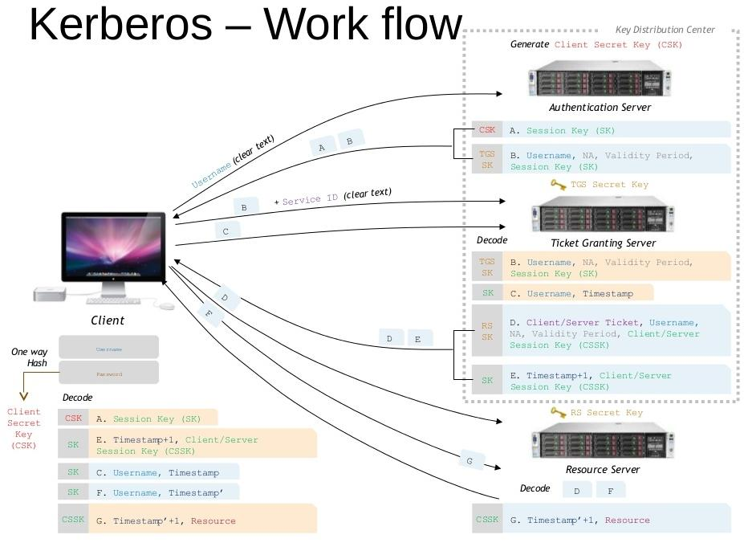
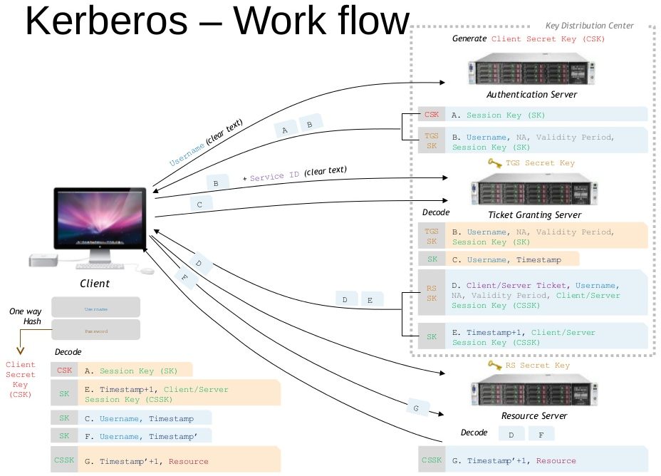

Kerberos




REF: http://www.cse.wustl.edu/~jain/cse571-09/ftp/kerb5/
This section focuses on the messages exchanged during a typical intra-realm authentication session between a client C and a server S, as shown in the box of Figure 1 [Cervesato09] . Sufficient detail is provided to support their formal specification in the next section. However, it is important to notice that Kerberos is far more complex than the abstract view given here. The simplified version of the Kerberos 5 exchanges is given in Figure 2: the top part relies on the traditional "Alice-and-Bob" notation, with the standard name [Figure 2] for each message given on the left. I will now explain each of the three roundtrips between a client (C) and the KAS (K), the TGS (T), and a server (S), respectively.

Authentication Service Exchange (C <—@gt; K):
- This exchange takes place as the user first logs on to a Kerberized network. The client process C generates a nonce n1 and sends it to the KAS together with its own name, C, which represents the user, and the name of the TGS (officially "krbtgt", here abbreviated as T).
- After recognizing C, the KAS replies with a message containing two encrypted components: the ticket granting ticket (TGT) {AK,C, tK}kT that is cached by C and will be used to obtain service tickets for the rest of the day, and {AK, n1, tK, T}kC with which the KAS informs C of the parameters of the ticket. AK is the autentication key and the TGT is meant for the TGS and is encrypted with the long-term key kT that the KAS shares with the TGS. It contains a newly generated authentication key AK and a timestamp tK in addition to C's name. The key kC used to encrypt the second component is a longterm secret between C and the KAS derived from the user's password. AK will be used in every subsequent communication with the TGS, sparing the more vulnerable kC. The timestamp tK will assure the TGS and C that this ticket was issued recently, as all Kerberos agents have loosely synchronized clocks. The nonce n1 in the second component binds this response to C's original request.
Ticket Granting Exchange (C <—@gt; T ):
- This exchange takes place the first time U attempts to access a service S. In the outgoing message, C transmits the cached TGT and S's name together with a newly generated nonce n2, and the authenticator {C, t}AK, where t is a timestamp. The authenticator proves to T that C actually knows the authentication key AK.
- After authenticating C and verifying that it is allowed to use S, the TGS sends a response with the same structure as the second message above except the service ticket {SK,C, tT }kS is now encrypted with the long-term key shared between the KDC and S, and it contains a freshly generated service key SK, C's name, and a timestamp tT . The other encrypted component is as in the second message above, but now encrypted with the authentication key AK. C caches the service ticket.
Client/Server Exchange (C <—@gt; S):
- This exchange takes place each time the client initiates a new session with the server S. With a service ticket in hand, C simply contacts S with this ticket and an authenticator similar to the one described above.
- The response from S is optional as the subsequent application exchanges may subsume it. When present, it provides assurance to C that S is alive, for example by returning the timestamp t0C that C included in its request, encrypted with the service key.
Security Consideration
- One weakness of the standard Kerberos protocol lies in that the key kC used to encrypt the client's credentials is derived from a password, and passwords are undoubtedly vulnerable to dictionary attacks [Newman01]. In addition, since the initial request is completely plaintext, an active attacker can repeatedly make requests for an honest client's credentials and accrue a large number of plaintext-ciphertext pairs, the latter component being encrypted with the client's long-term key kC (which is derived from a password). While the attacker is unable to use these credentials to authenticate to the system, he is given considerable opportunity to perform an active dictionary attack against the key.
- Kerberos can optionally use pre-authentication, a feature designed to prevent an attacker from actively requesting and obtaining credentials for an honest user. Pre-authentication functions by requiring the client to include a timestamp encrypted with his/her long-term key in the initial request. The authentication server will only return credentials if the decrypted timestamp is recent enough. This method successfully prevents an attacker from actively obtaining ciphertext encrypted with the long-term key; however, it does not prevent passive dictionary attacks, i.e., a passive attacker could eavesdrop on network communications, record credentials as the honest client requests them, and attempt off-line dictionary decryption. Hence, pre-authentication makes it slower for an attacker to perform cryptanalysis against the user's long-term key, but it does not prevent the attack. PKINIT, along with a number of other methods, aims at eliminating this dictionary attack vulnerability. In Section 4, I will introduce PKINIT and concentrate on the PKINT attack in Section 6.
END